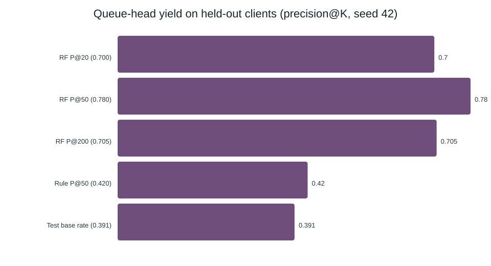
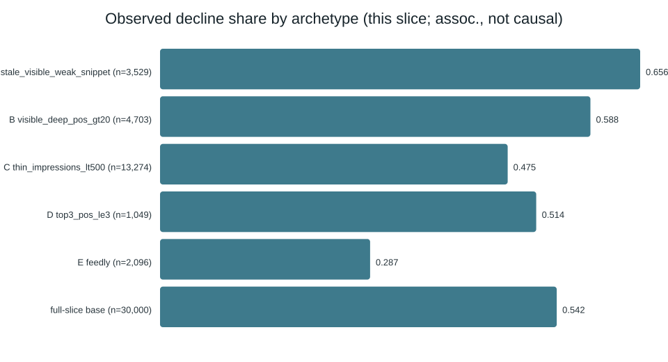

FlyRank ML Internship — Capstone Research Paper
Which Pages Should an Editor Fix First? A Decision-Support Ranker for Content Refresh, Evaluated on Held-Out Clients
Abstract
When a search portfolio holds tens of thousands of pages and editorial time is scarce, the useful question is not whether a page is declining but which pages to review first. This paper studies that ordering problem on the anonymized FlyRank ML Internship dataset — a 30,000-page, 44-column slice drawn from a larger production search release and spanning 32 pseudonymous clients. I define a per-page decline proxy (last-30-day impressions more than 20% below the prior 30 days, base rate 0.542), build a transparent hand-rule baseline, and compare it against logistic regression, a decision tree, and a random forest under a client-grouped holdout (6 never-seen clients, seed 42). The random forest ranked held-out pages at ROC-AUC 0.747 and precision@200 0.705 versus the baseline rule's AUC 0.501 and precision@200 0.395 on the same split (test base rate 0.391), passing a bar set before training — while carrying a measured 0.447 false-alarm share that the paper states plainly. The output is a ranked, reason-coded review queue that supports human triage: decision support for ordering review, not evidence that refreshing a flagged page changes its outcome.
1. Introduction & problem statement
A small content team sits down on a Monday with 30,000 live pages and enough time to review about fifty of them before the week ends. Some pages are quietly losing traffic; most are fine. Reviewing pages at random wastes the week. Reviewing only the oldest pages misses the pages that are losing visibility right now. The team does not need a fortune teller — it needs a good order to work in.
This is the decision this work supports. The unit of analysis is one content
page (content_id) measured over a fixed 90-day window; the output
is a score that ranks pages, each carrying a human-readable reason code and a suggested action;
the action a person takes is "review this page this sprint, or defer it"; and
the cost of a wrong call is wasted editor hours (a false alarm) or a declining
page left unfixed (a miss). Because both costs are real, the evaluation reports precision at a
fixed review budget, not raw accuracy.
Why machine learning at all? The signal for decline is not one column. A single hand rule forces one threshold across all pages and throws away the interactions — visibility, position, freshness, engagement — that a ranked model can weigh together. If that advantage is real, a learned ranker should beat the best simple rule on the same held-out data. If it is not, the simple rule wins and the model has earned nothing. The rest of this paper tests exactly that.
The working question, stated before any model was trained:
Research question
On pages an editor has never seen, does a learned model rank imminent-decline pages above a transparent hand rule — and by how much — when both are scored on the same split and the same precision-at-K metric, with a review budget of a few hundred pages?
To keep the answer honest, the success bar was fixed before training: ROC-AUC ≥ 0.70 and precision@200 ≥ 0.65 on held-out clients, judged against a hand-rule baseline recomputed on the identical split. Everything reported below is observed and directional; none of it is a causal claim about Google's ranking algorithm.
2. Data
Release. This analysis uses the FlyRank ML Internship dataset,
provided as a small anonymized slice (data/raw/content_refresh_anonymized.csv,
30,000 pages × 44 columns, 32 pseudonymous clients). The slice is drawn from a larger production
search release hosted as a gated Hugging Face dataset
(FlyRank/internship-warehouse, roughly 79 million daily performance rows). The
metrics in this paper come from the 30,000-page anonymized slice — not from all 79M rows — and
the paper says so wherever a number is quoted.
Public safety. The slice contains no client names, domains, URLs, page
titles, or search queries. Client and content identifiers are pseudonymous hashes used only to
group rows, never as model features. Nothing private appears in this repository's
work/ folder or in this page.
Unit, grain, and windows
The unit is one content page over a fixed 90-day reporting window. The slice is a
cross-sectional snapshot: the decline label compares two 30-day sub-windows measured
inside the snapshot (the most recent 30 days versus the 30 days before that). Separately,
the Week-3 data contract was built against the hosted warehouse's 2026-03
partition, using features from 2026-03-01–03-14 and an outcome window of 2026-03-15–03-28; the
2026-06 partition was reserved and left untouched. The sealed-month design is a
guard against tuning to one period, not a claim of a live forecast.
What was excluded, and why
- Label machinery.
trend_directionandtrend_pct(and the 30-day count columns they are computed from) define the label. They are banned from every feature list — including one on purpose for a leakage demonstration in §3. - Identifiers as features.
content_idandclient_idare pseudonyms; they carry no portable signal and are used only to group the split. - Product/tool metadata.
provider_usedandmodel_useddescribe internal machinery, not page quality. - Unknown-window rows. Rows whose previous 30-day window is zero
(
trend_pctblank — mostlynew/flatpages, 3,388 of 30,000) cannot show a decline trend and are carried at label 0 rather than dropped, so the queue never silently omits them. - Structural zeros where measurement is absent. Analytics rows flagged as unavailable are treated as "not measured," not as "no engagement," in the warehouse contract.
How much data, and its shape
One property of this slice drives a limitation stated up front: individual clients have very different history depths, so the panel is unbalanced and the slice is a survivor-biased snapshot of established, measured pages — not a level playing field for brand-new or tiny pages.
3. Methodology
3.1 Label definition
A page is labeled declining when its most recent 30-day impressions are more than 20% below the prior 30 days:
is_declining_label = (trend_direction == "down") # last-30d impressions > 20% below prior 30d assert (is_declining_label == (trend_direction == "down")).all() # checked on all 30,000 rows
The label is a proxy — a thresholded rule on an observed outcome, not a law of nature. A page at −21% and a page at −19% get different labels despite being nearly identical. This is the single most important caveat in the paper, and it is why every claim below is phrased as directional decision support.
3.2 Features
The model sees 60 columns: 21 numeric signals (visibility, position, freshness, engagement,
content size, log-scaled volume) and 9 categorical signals one-hot encoded
(content_type, main_intent, tier columns for age, freshness, word
count, impressions and position). Missingness is handled with explicit flags
(has_keyword, has_wordcount, pos_missing) rather than
blind imputation, because absence of a measurement is itself informative for a triage queue.
Thirteen columns are banned from features and asserted absent in code:
trend_pct, trend_direction, is_declining_label, the six
*_last_30d/*_prev_30d windows across impressions/clicks/sessions, and
content_id, client_id, provider_used,
model_used.
3.3 Baseline (the rule to beat)
The transparent baseline is a weighted hand rule that fires only on pages that are stale, visible, and under-clicked:
score = stale90 · visible500 · weak_snippet · (21 − avg_position) stale90 = days_since_last_update >= 90 visible500 = impressions_90d >= 500 weak_snippet = ctr < 0.5 and 1 <= avg_position <= 20 reason code = stale_visible_weak_snippet | action = refresh_candidate
On all 30,000 rows the rule flags 3,529 pages, with in-sample precision@50 of 0.90. That in-sample number is flattering and is not the comparison used in Results: the baseline is recomputed on the same held-out clients as the model, where it collapses to AUC 0.501 and precision@50 0.42. The gap between those two numbers is the whole reason to hold out clients at all.
3.4 Models
I trained a short, readable ladder rather than searching a large space: logistic regression (class-balanced), a decision tree (depth 5, min-samples-leaf 50), and a random forest (300 trees, depth 10, min-samples-leaf 25, balanced subsampling). No gradient boosting was added — a third ensemble adds tuning surface without answering the lane question, and the comparison that matters is against the baseline, not against the leaderboard.
3.5 Validation design
All evaluation uses a grouped, client-holdout split: rows are grouped by
client_id and 20% of clients (6 of 32) are held out entirely, so no client appears
on both sides. The split is fixed with seed 42 and is shared by the baseline and every model.
This matters because pages within a client share style, templates, and traffic patterns; a
random row split lets a model memorize client-specific quirks and reports a flattering number
that does not survive to unseen clients. The train/test counts and base rates are reported with
the results.
3.6 Leakage checks
Seven checks were run; two are load-bearing:
- Injection test. Adding the label-derived
trend_pctback as a feature drives logistic regression to AUC 0.999; without it the same model measures 0.697. The near-perfect score is the confession of a leak, not a discovery — the harness detects it. - Split-honesty test. The random-row split reports AUC 0.757 / P@50 0.920; the grouped client-holdout reports 0.747 / 0.780 on the same model. The small AUC gap shows ranking generalizes; the larger precision drop shows the queue head is harder on a lower-base, no-memorized-style population. The grouped number is the one shipped.
- Feature-sanity test. The top permutation-importance signal shifts only 0.029 of AUC when shuffled — a real driver, not a single leaking column (a leak would show a ~0.3 shift).
- Also checked and documented: future/overlapping windows quarantined; no decision-derived product flags present; population selection recorded; base rates printed per split; IDs used for grouping only.
One leakage risk cannot be removed and is disclosed: the 90-day aggregate columns necessarily contain the 30-day windows the label is computed from. Client-grouping contains the bleed at the client boundary; it does not eliminate it within a client. Readers should treat the reported numbers as directional, not as a sealed external benchmark.
4. Results (model vs baseline)
Every row below is computed on the same 2,325 held-out pages from 6 unseen clients (seed 42; test base rate 0.391; train base rate 0.555). The baseline rule is the generous weighted rule from §3.3, recomputed on this split. A bar of AUC ≥ 0.70 and P@200 ≥ 0.65 was fixed before training.
| Approach | ROC-AUC | P@20 | P@50 | P@200 |
|---|---|---|---|---|
| Hand-rule baseline | 0.501 | 0.40 | 0.42 | 0.395 |
| Logistic regression | 0.696 | 0.40 | 0.52 | 0.545 |
| Decision tree | 0.742 | 0.50 | 0.56 | 0.595 |
| Random forest (shipped) | 0.747 | 0.70 | 0.78 | 0.705 |
The random forest passes the bar on both axes (AUC 0.747 ≥ 0.70; P@200 0.705 ≥ 0.65). The decision tree passes on AUC but misses on queue quality (P@200 0.595), and logistic regression misses both — evidence that the lift comes from modeling feature interactions, not from "using ML" generically. The headline contrast: AUC 0.501 → 0.747 and P@50 0.42 → 0.78, same split, same metric.

4.1 What the model actually learned
Permutation importance on held-out clients ranks sustained visibility first:
days_with_impressions (shuffle-Δ 0.029), then log_impressions_90d
(0.016), then log_clicks_90d (0.007) and ctr (0.005). Built-in
impurity importance agrees, adding avg_position and content_age_days.
In plain words: the model rewards pages that have been consistently visible — reach
that travels across clients — whereas the hand rule rewarded pages that were simply
stale and thin-snippeted. The two are complementary, which is a more useful finding
than a bare metric.

4.2 Error analysis, promoted to policy
Errors are not spread evenly, and the pattern changed how the queue is used. Against the held-out set, error rate by position tier is 9.3% for top-3 pages, 39.1% for page-1 pages, and 37–43% for striking/page-3–5/deep pages. In other words, the queue is trustworthy at the head and noisy in the tail, so the recommended workflow spends its review budget on the top of the queue and treats deeper ranks as advisory. Of the pages the model flags, 44.7% are false alarms; of the pages it passes, 20.9% are misses. Both numbers are quoted wherever the playbook is described. By content type, error is highest on keyword articles (40.8%) and lowest on feedly articles (23.0%).
The number that keeps it honest
Precision@50 of 0.78 means about 11 of the top 50 flagged pages are not actually declining. A queue is a way to spend attention, not a verdict. The queue is safe to use as a review order and unsafe to use as an automatic decision.
5. Limitations & honest framing
This section is written to pre-empt the strongest objections, not to bury them.
- The label is a proxy, not an outcome. "Declining" is a same-window −20% bucket. A page at −19% and a page at −21% receive different labels. Nothing here predicts a future trajectory.
- No causal evidence. No refresh experiment was run. Pages that get refreshed are selected, often because they looked weak, so the data cannot say that refreshing a flagged page causes recovery. This paper claims ranking value, not treatment effect.
- Single client-holdout, one seed. Six clients held out once at seed 42 is a directional test, not a benchmark. A different held-out set could move the numbers; the before/after split audit exists precisely to show how sensitive queue precision is to the split design.
- Errors concentrate in the tail. As reported in §4.2, deeper ranks are noisy; a 0.447 false-alarm share is large and is the reason the queue is human-reviewed.
- Overlapping aggregate windows. The 90-day aggregates contain the label's 30-day sub-windows. Client-grouping contains this at the boundary but does not erase it within a client.
- Systematic missingness. Feedly articles carry no keyword data;
avg_position = 0means "no data," not "rank zero"; some rate columns can exceed 100%. The pipeline flags rather than silently imputes, but the model inherits these quirks. - Scale of evidence. The reported metrics come from the 30,000-page anonymized slice, not the full ~79M-row release. Reusing these thresholds at warehouse scale would require per-client windows and a re-audit; that is future work, not a claim made here.
What this paper explicitly does not claim
It does not claim to reverse-engineer or predict Google's ranking algorithm. It does not claim that refreshing a flagged page will recover traffic. It does not claim the model is production-ready for any client outside this slice. Every number is observed, measured, or directional, and the output is decision support for ordering human review.
6. Ranked recommendations (action playbook)
The artifact an editor receives is a ranked queue in which every page carries one primary reason code and a suggested action. Ranked by the validated model probability, here is the playbook — first the action to take, then how to use it responsibly.
R1 Work the top of the queue first — it is the only part that is reliable
Top-3 pages show a 9.3% error rate versus 37–43% deeper in the list. Spend the sprint's review budget from rank 1 downward and stop when the marginal page stops looking obviously actionable.
R2 Refresh title & snippet first for stale, visible, under-clicked pages
Reason codes stale_snippet_page1 and stale_snippet_page2 fire when
a page is stale ≥ 90 days, visible ≥ 500 impressions, ranked inside the top 20, and has CTR
below 0.5%. Suggested action: refresh_title_snippet_first — a cheap, reversible
change before a full content rewrite.
R3 For visible-but-deep pages, refresh content and snippet together
Reason code visible_deep (impressions ≥ 500, position > 20) maps to
refresh_content_and_snippet. These pages have demand but sit too far down; they
reward a deeper update rather than a title tweak.
R4 Guard against thin or unmeasured pages before acting
Pages with impressions < 100 or zero sessions are forced to monitor
regardless of score — a high probability on an unmeasurable page is noise. A page needs both
traffic and sessions to justify editor time.
R5 Run the six-point human checklist before any refresh
Confirm intent match, live demand (sessions_90d > 0 and
impressions_90d ≥ 100), no SERP-feature explanation for the dip, no seasonality
or demand-side cause, sensible position data (avg_position = 0 means no data),
and record the decision. The checklist is what keeps a queue from becoming an autopilot.
R6 Monitor and retrain on explicit triggers
Retrain or freeze when: base rate drifts ±10pp outside the 0.391–0.542 band; sampled precision@50 falls below 0.60 for two sprints; median visibility features drift > 30%; the client mix shifts (a new client, a >25% batch, or churned clients re-entering); editors reject > 50% of flags for two sprints; or 90 days pass without a refit and leakage re-audit.
What to expect, as a scenario (not a promise)
With a 50-page sprint, observed held-out yield is about 39 true declining pages out of 50 (P@50 0.78) instead of roughly 20 at the random base rate — at the cost of about 11 false alarms, each consuming editor time. This is a value scenario grounded in the measured queue yield; it is not a revenue or traffic forecast.
No-go list
Never auto-publish or auto-edit from the score; never delete, redirect, merge, or noindex on score alone; never treat thin/unmeasured pages as priorities; never score brand-new pages (<90 days) or clients with no history; never present the output as Google's algorithm or promise that refreshing recovers traffic; never bypass the checklist for the top 10.
7. Reproducibility
Everything reported here traces to committed receipts and notebooks. Nothing is taken on faith: each number in Table 1 and Figures 1–2 is produced by a committed JSON receipt or figure file, and the capstone notebook recomputes the headline comparison from those receipts.
Run it from a fresh clone
git clone https://github.com/yowxy/Flyrank-Internship-ML cd Flyrank-Internship-ML pip install -r requirements.txt python scripts/run_all.py # reference pipeline on the bundled sample
Notebooks (each maps to a section of the method chain)
work/notebooks/w01_research_question.ipynb— question framing and lane.work/notebooks/w02_ml_task_framing.ipynb— task framing, label, pre-registered bar.work/notebooks/w03_data_contract.ipynb— warehouse data contract and exclusions.work/notebooks/w04_baseline_score.ipynb— signal audit and the hand-rule baseline.work/notebooks/w05_model.ipynb— model ladder and the client-holdout comparison.work/notebooks/w06_validation_audit.ipynb— before/after split audit and leakage injection.work/notebooks/w07_action_playbook.ipynb— ranked queue, reason codes, monitoring triggers.work/notebooks/capstone.ipynb— this paper, section by section, reproducible end to end.
Receipts (the numbers behind Table 1 and Figures 1–2)
work/outputs/w04_baseline_receipts.json # baseline: flagged=3529, in-sample P@50=0.90 work/outputs/w05_model_receipts.json # model ladder on 6 held-out clients (seed 42) work/outputs/w06_validation_receipts.json # random-row 0.757 vs grouped 0.747 work/outputs/w07_playbook_receipts.json # queue mixes, triggers, reference medians work/figures/playbook_precision_at_k.svg # Figure 1 work/figures/playbook_archetype_rates.svg # Figure 2
The full failure log — the split that flattered the model, the injected leak, and the wrongful rank-7 pick — is kept in the notebooks rather than summarized away, because a reviewer should be able to reproduce the mistakes, not just the headline.